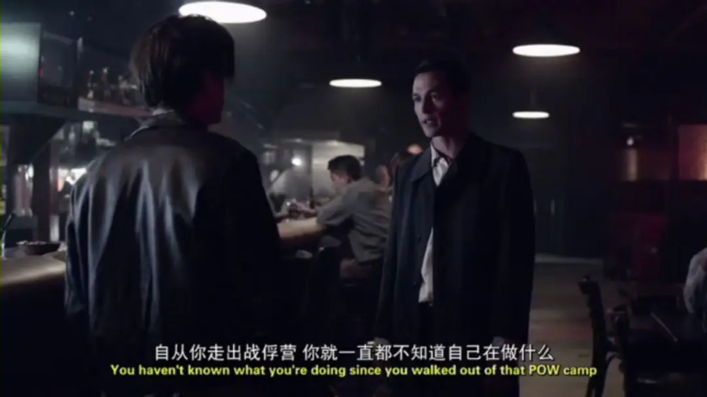
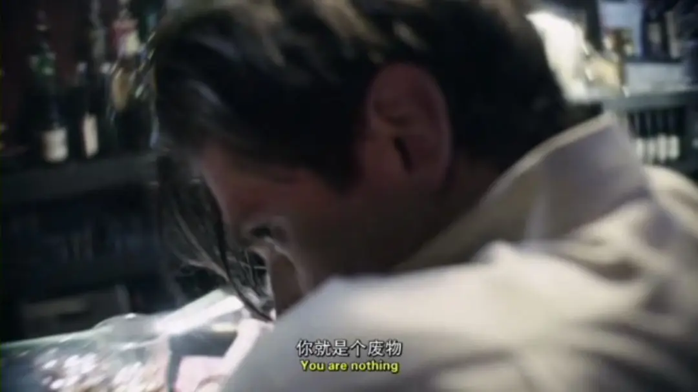
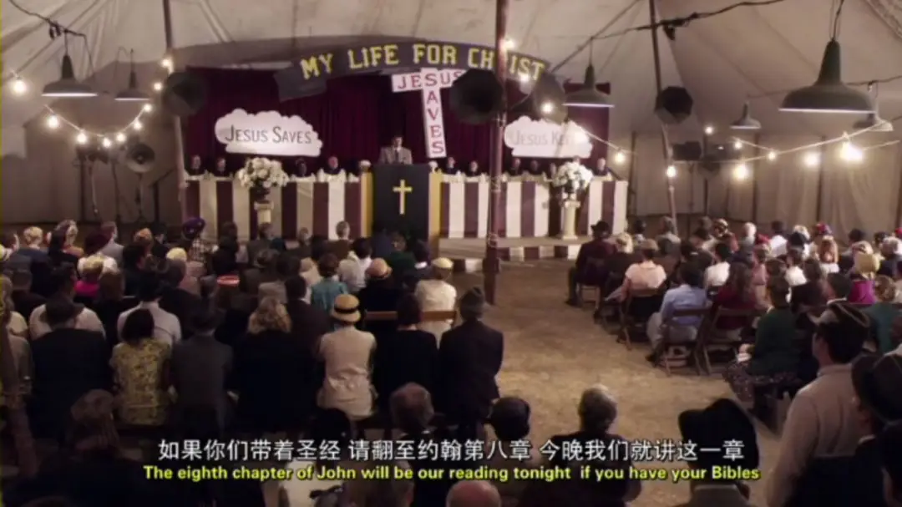
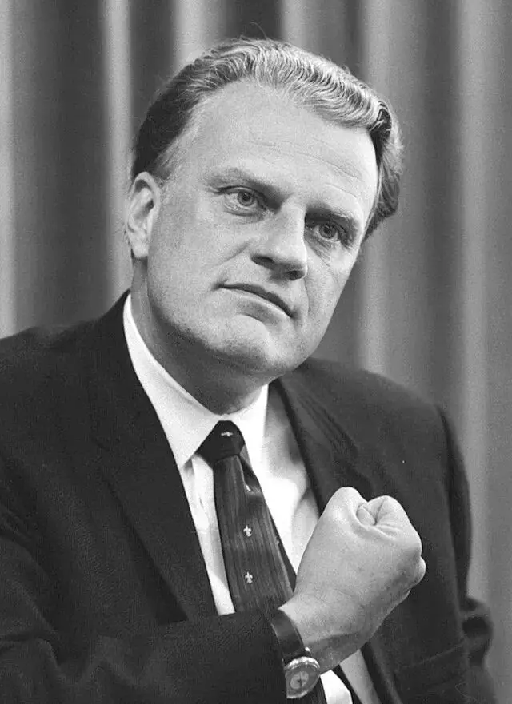
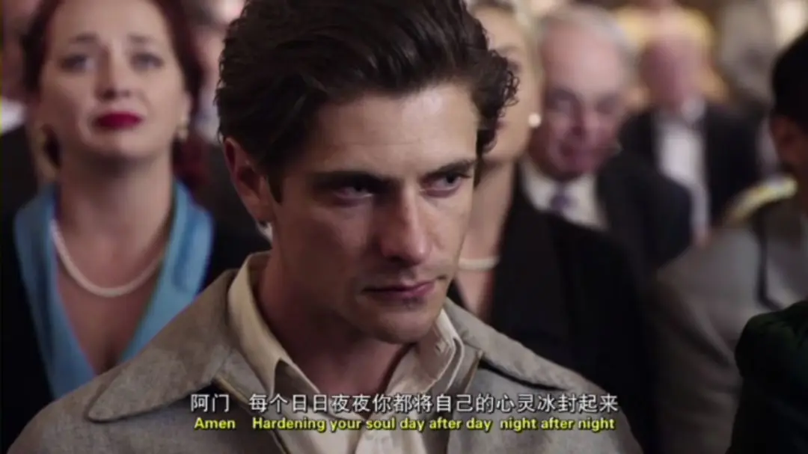
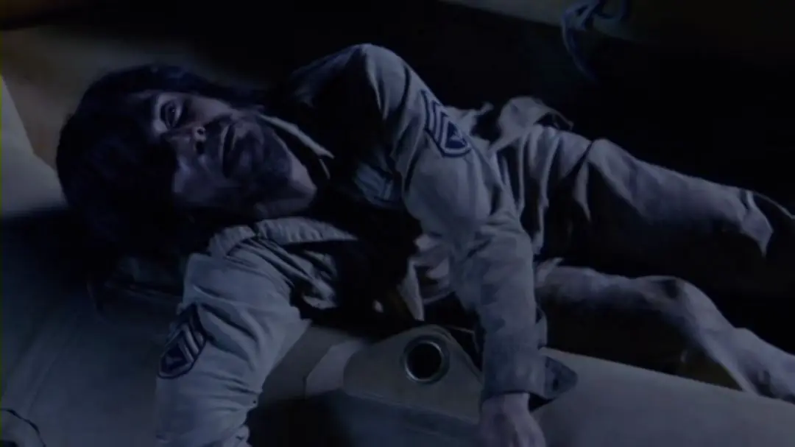
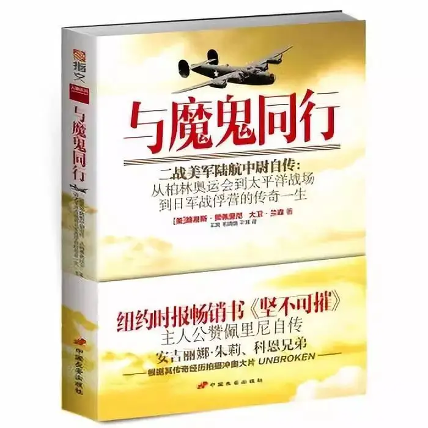
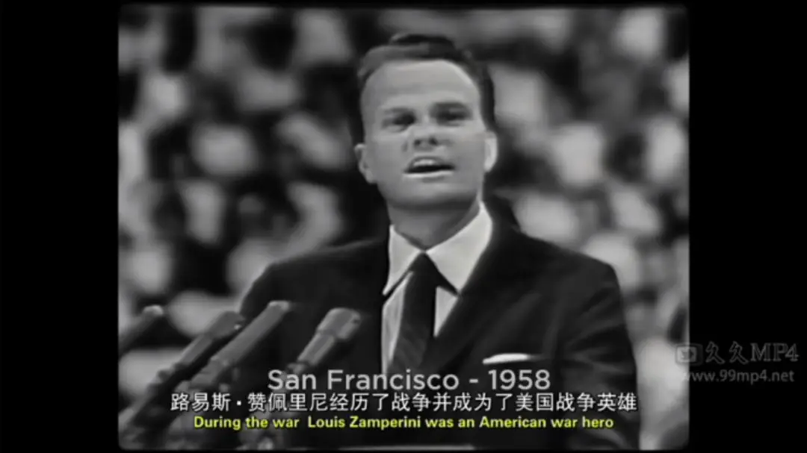
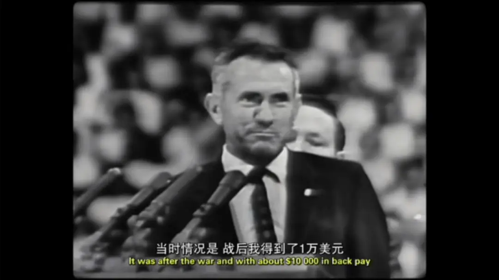

正文共计4000字左右
预计阅读时间5min
-01-
1920年代，美国加利福尼亚州。
一个叫做路易的叛逆少年打架、斗殴、偷窃，狂奔在各个街头。
这让他的家人头痛不已，可是路易的哥哥注意到他有长跑天赋，鼓励他成为一个长跑运动员。
于是，路易将青春里的躁动全部投入到艰苦的训练中。
果然，1934年，17岁的路易在1英里赛跑中创下了4分21.2秒的全国高中生纪录，而这个纪录保持了20年。
之后，在纽约州兰德尔岛举行的奥运会5000米选拔赛中，他最后几乎与美国纪录保持者唐·拉希并肩撞线，并因此赢得了奥运会参赛资格，可以代表美国参赛柏林奥运会。
1936年柏林奥运会5000米的比赛中，19岁的路易爆发出惊人的冲刺能力，取得了第八名的成绩。
路易的风采令人瞩目，当时希特勒主动要求接见他，戈培尔则在一旁为他们拍照。
路易意气风发，四年后的奥运金牌势在必得。
可是不久后，日本与美国之间的太平洋战争爆发了。
路易开了挂的人生被战争打乱了节奏，他应征入伍，成为了轰炸机上的一名投弹手。
1944年5月，在一次执行任务中，路易所乘坐的轰炸机受创失事坠海，他和另外两个同伴在极度恐慌中抓住了救生筏逃过一劫。
接着，三人在大海上漂流，饥饿、恐慌、鲨鱼袭击、无助、绝望，每天都在挑战着他们的极限。
33天后，其中一位同伴在绝望中死去。
路易和另一位同伴继续漂流，他的体重从57公斤掉到了34公斤，死亡似乎随时会降临。
奇迹的是，漂流了47天后，他们被海水推到了一个小岛上。
可令他们没有想到的是，刚上岸就撞在了日军的枪口之下，接下来两年中，路易辗转4座战俘营，饱受疾病、暴力、虐待、折磨。
尤其是一个绰号“大鸟”的日本人极度凶残，大鸟让路易在屎堆中做俯卧撑，让他在身体极度虚弱的情况下长时间举着沉重的木桩。
为了活命，路易只能咬着牙照做，因为一旦胳膊弯了就会遭到枪击。
就这样，曾经无比骄傲的奥运明星被别人狠狠地踩在脚下，经常遭到无缘由的毒打。
最令路易奔溃的是，这些暴行无情地毁掉了他作为人的尊严，让他变成了一个无足轻重、苟延残喘的死鱼！
而在大洋彼岸的美国，政府早已宣布路易已经以身殉国。
当路易扛过两年非人战俘营生活再次出现在美国的时候，他的传奇经历和顽强意志震撼了全国。
荣誉、花环、赞赏环绕在路易的身边。
可路易却再也不是以前那个意气风发的小伙子，而是患上了创伤后应激障碍，过去的残酷记忆不断侵扰着他，他整晚失眠，大鸟在幻象和梦境中继续折磨着他。
路易变得脾气暴躁，通过酗酒来缓解自己的精神创伤，可酒精只能暂时麻痹他的感觉，他的人生因此而更急转向下，就是正常生活对于路易来说都是一件难事。

眼看着自己的人生被毁，路易对大鸟的仇恨更深，甚至想要去日本亲自手刃仇人。

混乱、醉酒的路易也深深地伤害了他的妻子辛西娅，两人甚至要走向离婚。
当辛西娅伤透了心决定离开路易时，作为基督徒的她听了葛培理的布道大会，葛培理的讲道深深感动了辛西娅，她知道她不应该放弃路易。


△葛培理是美国著名基督教新教福音派布道家，被称为“美国国家牧师”，曾担任多位美国总统的顾问，并且他个人和多位美国总统德怀特·艾森豪威尔、理查德·尼克松以及马丁·路德·金关系甚为亲密，当时的布道会葛培理只有31岁。
当天，她回到家中拥抱着精神恍惚的路易，告诉他“我爱你，我将永远不会离开你！”
在妻子的鼓励下，路易也参加了葛培理的布道会。

当天的主题是饶恕。
路易大受震撼“当晚我离开帐篷布道会之后，我对自己的生命有一种可怕的罪疚感”。
原来，当他在大海漂流绝望无助的时候，他曾看着星空祈祷“如果你存在就救我脱离险境，如果我能活下去，我将终生跟随你。”

可当他活着回到美国后，仇恨、创伤占据了他的心灵，他早已忘记了当时的祈祷，直到在葛培理的布道会上，那个记忆忽然喷薄而出，他彻底被上帝改变了：
是的，我曾经有伟大的时刻，有很多美好的经历，很多次从死里逃生，但我仍然不满意二战后的生活。
我活着回家了，神遵守了祂的承诺，但是我没有。
所以我向前走，接受了耶稣基督。
自此，路易的生命得到了医治和更新，他彻底摆脱了酒精的捆绑，噩梦也不再向他袭来，60多年后，路易在2011年接受采访时说：“我从布道大会回来的那天晚上，令人难以置信的是，从那以后我再没有做过恶梦。”
“当这个年轻人（葛培理）说我们一起低头闭目祷告时，我走出了泥潭。”
后来他做了一件令所有人震惊的事情，他回到日本，对曾经虐待的日本战俘表示宽恕。
81岁的时候，路易再次前往日本，作为长野冬季奥运会火炬手，再次奔跑在跑道上，让无数人感动。
-02-
路易的一生跌宕起伏，不同的人会在路易的身上看到不同的东西。

△路易.赞佩里尼自传，另外美国女作家劳拉·希伦布兰德也为其写成名为《坚不可摧：一个关于生存、韧性和救赎的二战故事》的传记，曾在《纽约时报》的畅销书榜上登顶108周，被誉为“感动了整个美国的励志巨著”。
如果是其他自媒体去写这个故事，一定充满了浓浓的鸡血，标题也许就叫做“彪悍的人生熬出彪悍的鸡汤”。
这个鸡汤里包含了永不言弃的意志、坚持不懈的斗争和让人感动的不离不弃的爱情。
这个鸡汤让人观照出自己还不够努力，让他们发现人定胜天的真理，还会让他们再次相信爱情。
这就是大部分人喜好并追求的正能量。
这有错么？
肯定没有错，让人学会坚强、让人学会包容和饶恕这些都是很好的，甚至是必要的。
但是鸡汤是有边界的。
路易曾是一个最正能量的人，他说“如果你想要成为一名成功的运动员，就必须学会自律，另一方面，你要对自己有信心，相信无论面对什么情况，你都能应付得了——不能放弃。还有，要保持良好的身体素质。”
这份积极向上的力量几乎可以让他在生活和事业上应付自如，可不幸的是，路易碰到了战争，碰到了大鸟。
飞机着火飞速坠落、漂流在一望无际的大海上，除了自己的恐惧什么都听不见。
鸡汤忽然失去了味道，正能量遇到了瓶颈。
当一个人独自面对远超想象的大规模有组织的暴行时，只相信自己是远远不够的。
出路在哪里？
自我救赎已经走投无路，路易“迷信”了一把，开始向上帝祈祷。
可当路易活着回去时，他早已把这件事忘的一干二净，他仍然把发生在自己身上的奇迹归功于自己的意志。
当他再次陷入到充满绝望和自我毁灭欲的深渊时，他又开始“迷信”。
这一次，葛培理的讲道终于让他上升到了一个之前无法预见也无法想象的高度。
他得了上帝的救赎，并且将这种被饶恕的祝福传递给了日本。
路易曾说“整个故事的转折点是当我发现基督是我的拯救者的那一刻，那也是我整个人生的转折点”。
因此要将路易的故事改编成电影，故事的高潮在布道会上，而非在大海或者战俘营中。
世俗化世界中，大家喜欢的高潮是在大海和战俘营里，是在与命运和艰险斗争的瞬间，而非跪倒在十字架面前那副莫名其妙、软绵绵的“神棍”样。
那是软弱的，那是迷信的，那是可耻的，那是对自己的背叛！
毕竟，大家认为宗教是鸦片。
可事实上，假宗教才是鸦片，鸡汤里面的顽强、向上、饶恕本身只是信仰的产物，这些并不是信仰。
如果我们将这些当作自己最大的追求，只会落在骄傲悖逆和“立志行善由得我, 行出来由不得我”的自我割裂之中。
毕竟，你自己的欲望根本给不了“你要坚强、你要努力、你要饶恕”的基础和动力。
因为你的欲望中包含着贪图享乐、自我中心的罪性，但你却要以此为基础、为目的去变得坚强、变得更有爱心，这就好比一头猪天天立志要像猴一样上树，那是不可能的，也是伪善的。
唯有将眼光面向永恒，将自身的罪性浸透在耶稣宝血之中，你才能以信仰为根基去坚强、去祝福别人。
因为爱的源头是上帝，荣耀的源头是上帝，回到源头才有盼望，远离这个源头，你所崇拜的就是偶像，而世俗化就是当今最大的假宗教。
世俗化让人类自给自足，在它划定的疆界中，一份付出就是一份回报，世俗化欺骗其中的人，让他们将上帝赐给人的普遍恩典当成是自己的成就，从而将上帝彻底淡出人类的视野。
可当有人跳出这个陷阱，在鸡汤的边界挣扎并触摸到上帝的时候，他才会恍然发现，信仰不仅存在于鸡汤的尽头，他本身就在鸡汤之上的立体坐标中，只不过他此前一直以为自己只生活在一个没有上帝的平面世界里。
△路易与葛培理
而立体坐标的发现，就会给他永恒的眼光，他会以一种更加强大、令人难以理解的力量去面对这个世界。
所以路易可以饶恕那些令他天天做噩梦的日本鬼子，而不知道立体坐标存在的人们，会觉得路易神神叨叨，信仰玄而又玄、触碰不得。
可他们不知道，他们已经被毒鸡汤迷的神魂颠倒，丧失了直觉。
-03-
有了上面的内容，我们回到电影中。
2013年，曾与路易为邻的好莱坞著名女星安吉丽娜·朱莉被路易的故事感动。
△朱莉与路易.赞佩里尼
于是她亲自执导，并请出科恩兄弟改编剧本、罗杰·狄金斯摄影、杰克·奥康奈尔主演，以超豪华的阵容拍摄了讲述路易经历的《坚不可摧》。
电影虽获得了当年奥斯卡提名，但受到不少诟病，毕竟，这次改编略显鸡汤，电影花了最大的心思和篇幅去刻画路易的大海漂流和战俘生活，对于路易本人所看重的信仰转变只是轻描淡写。
2018年圣诞节，《上帝未死》的导演哈洛德·科朗克拍摄的《坚不可摧：救赎之路》上映。
这部电影可以看作是《坚不可摧》的续集，重点讲述了路易回国后遭遇的精神创伤和妻子辛西娅之间的故事。
△现实中的路易和妻子辛西娅
相比于朱莉的改编，哈洛德对于信仰的刻画是重点，布道会的改变也是全片的高潮。
电影中葛培理的扮演者是他的孙子葛卫理牧师，葛卫理牧师为了演绎好爷爷，他花了很大的功夫去观看葛培理的布道视频，在电影中有不错的表现。
电影结束，导演还放了一个彩蛋，出现了葛培理和路易的真实历史画面。


看得出，电影拍的比较用心，可是在路易信仰转变上的刻画不够细腻，电影不能算上乘之作，但绝对值得一看。
可惜，因为这部电影有些偏重信仰，引起了不少网友的“不适”，豆瓣评分只有5.0。
一个网友这么评价：
妈呀 年度最烂， 一星预警！大家千万不要看男主长得帅就上当受骗！开头就隐隐觉得剧情老套没什么逻辑，看到最后发现这电影是在传教啊！！！超级尴尬！！！！男主的颜值也不够撑起这部烂片，永远的媚邪一笑像极了杨洋，看多了真的很油腻！真的，大家听我一句劝，看点儿别的吧！！！
可见，不同思想、文化的碰撞在现在还是很激烈的，只是不同于过去社会主义与资本主义、科学主义与宗教信仰的二元对立，今天是中国特色世俗主义与宗教信仰之间的对立。
我们距离塑造西方现代文明的本源还离得太远。
可以想像，国人阅读到《圣经》中大卫战胜巨人歌利亚的内容时，会得到“只要坚持就能创造奇迹、千万不要轻看自己”的鸡汤。
可事实上，大卫战胜歌利亚背后的真正主角是上帝，不是大卫厉害，也不是大卫有信心，而是上帝保守了大卫，赐给了他信心。
路易的经历也是一样，他能在坠机、大海漂流、战俘营中幸存，不是路易的意志有多坚强，而是上帝在保守他的生命。
这就是不同眼光下不同的世界，有人眼里处处是鸡汤，有人眼中处处是梁木，而有人眼中处处是天父世界。
这也是我们国家处处立敌的原因，人家在按着契约精神办事，你看这为强权，人家在近代建立孤儿院，你说洋鬼子在吃小孩。
人家提倡女子不要裹脚并建立女子学校，你说他们在贩卖妇女，人家在中国办大学，你说人家是文化侵略。
人家说你不讲“任”#权，你说别人在放屁。
人家说弱势群体的艰难是耻辱，你却说这是自我奋斗的正能量。
人家说要保护“颜论”自由，你说这不与正能量没关系。
所以，你一次又一次地挨针。
我们当远离没有营养的毒鸡汤，去追求社会和人生的真相，因为真相才是出路和盼望，才会让人长记性。
这里没有挑逗你眼目情欲的小鲜肉
也没有挑动你肉体情欲的段子
更没有膨胀你今生骄傲的鸡血
我们只在乎那些最质朴真诚的作品
在那里我们才能恢复真正的想象力
我们也坚信这才是我们真正需要的

ID:Six_hundred_hits
长按二维码，一键关注
【六百击】
-END-
电影评论
尽情分享朋友圈

苹果打赏通道
小提示：文末广告是腾讯配送广告，内容与本号无关，但您的每次点击（无需反复点）都会给平台带来几毛收益，欢迎您点击支持六百击。